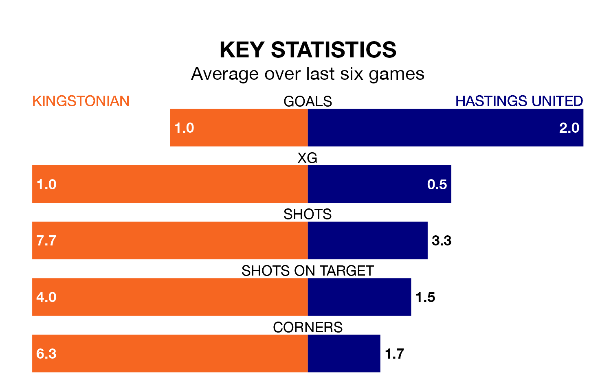

Mid-season relegation candidates Kingstonian face a challenge against high-flying Hastings United on Saturday.
Kingstonian are rooted to the bottom of the Isthmian Premier Division table, and have picked up three wins and four draws in their 25 games to date.
Hastings, meanwhile, are fourth in the standings with 45 points, having won 13 and drawn six of their first 27 matches, and are 16 points behind table-toppers AFC Hornchurch.
Kingstonian are in terrible form in Isthmian Premier Division, with no wins and a draw from their last six games.
With three wins and two draws over that period, Hastings's form is much better – they have taken 11 points from 18, compared to the hosts' one.
With 50 goals in 27 games so far this season, United are scoring more than average in the league with 1.9 goals per game. And they are conceding fewer than average, letting in 36 goals at a rate of 1.3 per game.
Kingstonian, meanwhile, are below average scorers, with 1.4 goals per game, compared to a league average of 1.6. They have conceded 2.2 goals per game.
In the last five years, Kingstonian and Hastings have played each other on four occasions. Kingstonian won one of them and Hastings the other.
On average, Kingstonian scored 1.0 goal and Hastings 2.0 in those matches.
Their last meeting was on November 11, when Hastings won 3-2 at home.
Kingstonian's last match was on January 27, a 0-0 draw against Concord Rangers.
Hastings beat Margate 4-0 last time out, on Tuesday.
Updated: 10:40 (UTC), 01/02/24